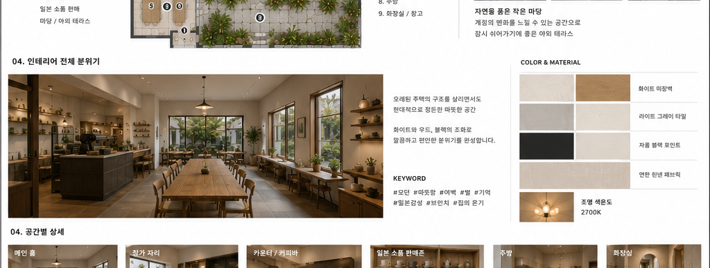
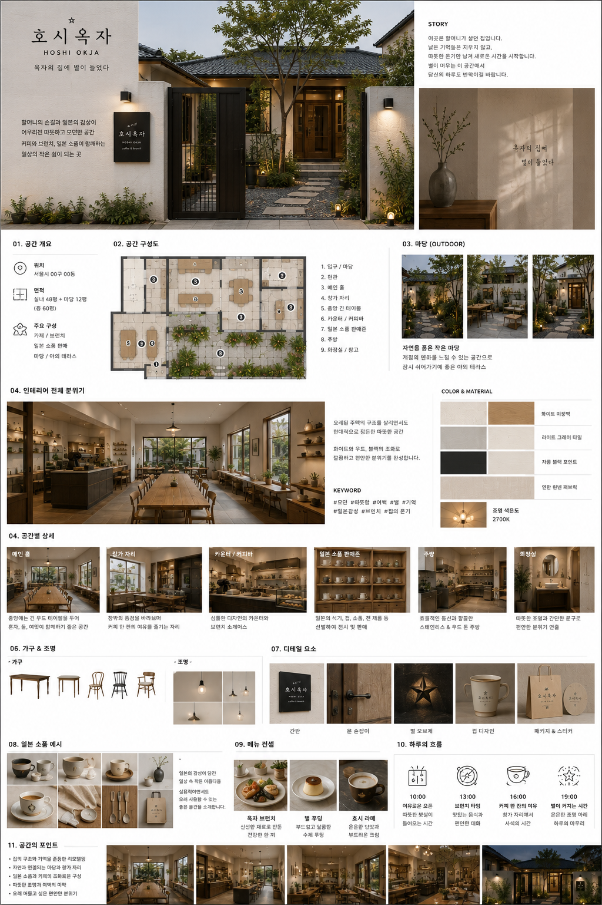
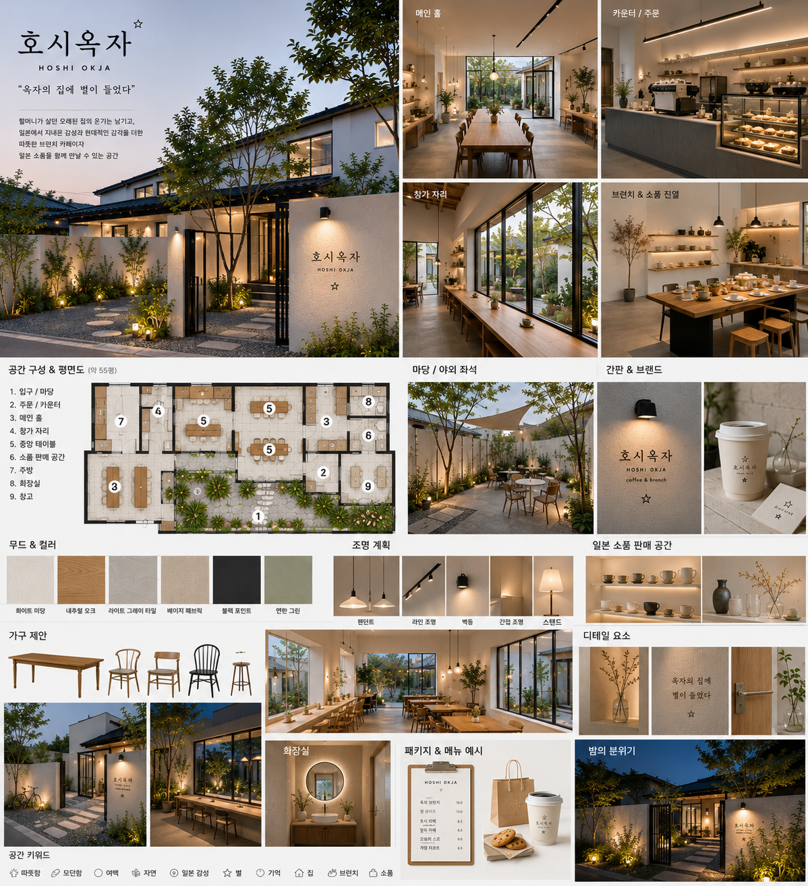
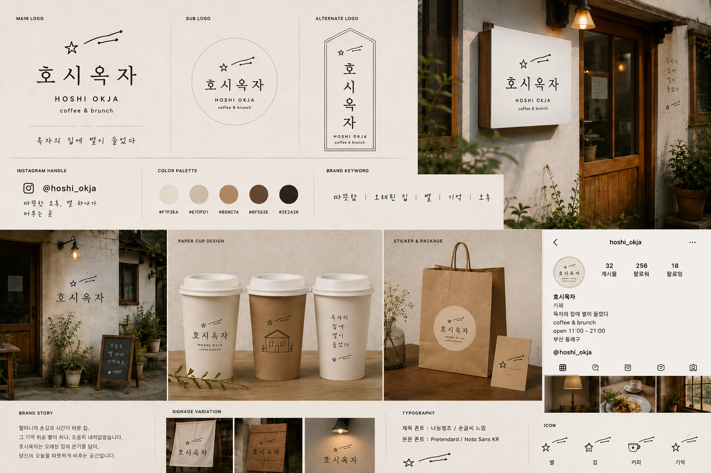

coffee · brunch · small goods
호시옥자
HOSHI OKJA
星 / ほし
옥자의 집에 별이 들었다
오래된 주택의 기억을 남기고, 현대적인 선과 여백으로 정리한 따뜻한 브런치 카페.

02 · name
이름에 담긴 두 개의 기억
호시는 일본어로 별을 뜻하고, 옥자는 이 집에 남아 있는 할머니의 이름입니다.
호시옥자는 어디에나 붙일 수 있는 이름이 아니라, 이 장소에서만 자연스럽게 설득되는 이름입니다.
옥자의 집에 들어온 작은 별.
03 · place
새로 만든 공간이 아니라, 다시 켜진 집
이곳은 예전 할머니가 살던 주택 1층입니다. 낡은 기억을 지우기보다, 손님이 편하게 머물 수 있도록 조용히 정리합니다.
- 대문과 마당이 먼저 손님을 맞이합니다.
- 밝은 미장 벽과 낮은 조도가 집의 온기를 남깁니다.
- 일본 감성은 문장보다 물건의 태도로 보입니다.
04 · direction
이름은 정겹게, 공간은 현대적으로
호시옥자는 설명과 콘셉트를 섞어 보여주면 힘이 약해집니다. 먼저 이름과 장소의 이야기를 이해시키고, 그 다음 실제 공간과 브랜딩 보드로 방향을 확인시키는 구성이 더 명확합니다.
기억은 남기되, 표현은 절제합니다.
- 설명 이름, 장소, 브랜드 문장을 짧게 정리합니다.
- 인테리어 전체 공간 보드로 평면, 좌석, 조명, 소재를 보여줍니다.
- 브랜딩 로고, 간판, 컵, 패키지, 인스타그램 응용을 별도로 확인합니다.
05 · interior concept
공간 제안은 전체 보드로 보여줍니다
공간 구성, 세부 영역, 운영 흐름까지 담긴 제안서형 보드입니다. 잘라 쓰기보다 전체 흐름을 보여주는 편이 더 설득력 있습니다.

06 · interior mood
인테리어 무드는 별도 보드로 확인합니다
외관, 메인 홀, 카운터, 창가 자리, 마당, 조명 계획을 한 번에 보는 무드 보드입니다. 작은 크롭 대신 원본 보드 전체를 사용합니다.

07 · final brand identity
브랜딩 시안은 이 보드 하나로 확정합니다
로고 타입, 컬러 팔레트, 간판, 컵, 패키지, 인스타그램 톤까지 확정된 브랜드 시안을 한 장으로 확인합니다.

08 · operation
운영 기준은 보드 뒤에 짧게 정리합니다
보드는 방향을 보여주고, 실제 운영 기준은 문장으로 남깁니다. 좌석을 많이 넣기보다 오래 머물고 싶은 자리를 만드는 것이 핵심입니다.
많이 꾸미기보다, 한 가지씩 오래 기억되게.
- 좌석 실내 24~30석, 마당 10~16석 이하의 여백 있는 구성
- 카운터 주문, 제조, 쇼케이스, 픽업 동선을 한 줄로 정리
- 소품존 여행 기념품처럼 채우지 않고 편집숍처럼 간격 있게 진열
09 · detail
별은 하나만, 기억은 오래 남게
할머니의 손길은 인물 이미지가 아니라 조명, 나무, 그릇, 문 손잡이, 작은 별 하나로 표현합니다. 일본어 표기는 포인트로만 작게 둡니다.
문구는 짧게, 표기는 작게, 물건은 오래 쓰게.
10 · online & menu
온라인과 메뉴는 브랜드 톤을 이어갑니다
인스타그램, 컵, 쇼핑백, 메뉴명은 같은 온도로 이어져야 합니다. 이름의 정겨움은 살리되, 표현은 과하게 감성화하지 않습니다.
@hoshi_okja · coffee · brunch · small goods
- 프로필 호시옥자 | 하양 카페
- 소개 옥자의 집에 별이 들었다
- 메뉴 옥자 브런치, 호시라떼, 별푸딩, 집앞 토스트
11 · closing
호시옥자는 이 집에서만 나올 수 있는 이름입니다
할머니의 집, 일본에서의 시간, 별이라는 작은 상징이 만나 하나의 브랜드가 됩니다. 이 공간은 커피를 파는 곳을 넘어, 기억을 다시 켜는 집이 됩니다.
@hoshi_okja · coffee · brunch · small goods
옥자의 집에 별이 들었다.